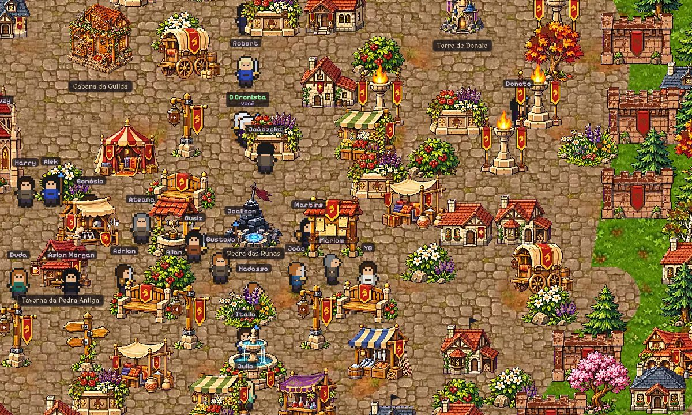

Cada seguidor é um morador. Entre com o seu @, monte o seu personagem e ande pela cidade junto com os outros moradores: escolha a sua casa, faça missões em grupo, abra o seu comércio e junte Valdins.
Já é personagem da história? No cadastro, escolha o seu nome: a sua aparência continua a mesma.

É no grupo dos moradores que o reino acontece: votações, eleições, missões da semana, o Rank de Renome e as decisões que viram episódio. Lá todo mundo fala como se estivesse em Valdreinor.
🍺 Entrar no grupo do WhatsAppParticipar da Taverna vale +1 de Renome.
Cada seguidor conta como um morador. O número que abre cada episódio é o número real de seguidores.
Os comentários viram personagens, ofícios, construções e votações. É o povo que decide o rumo do reino.
Todo mundo começa no rank F. Com Renome, missões e participação na Taverna, você sobe até virar lenda.
Molina, o rei louco, declarou guerra ao povo e foi expulso. Valdreinor votou e coroou o Rei Goldrath. Muralhas subiram, a biblioteca nasceu e cada morador ganhou um rank. Mas tanto barulho acordou algo debaixo da montanha: o dragão ancestral abriu os olhos.
Cada morador tem seu retrato, seu ofício e o @ de quem pediu. Procure o seu.
Registrado pelo Cronista, na biblioteca da Ordem.
Ofícios e classes, com XP e rank do F ao SS. Cada missão cumprida no reino vale XP, contabilizado pelo Ministério das Finanças. Os primeiros aparecem nos episódios.
Toque num capítulo para ler. Os capítulos trancados abrem quando o reino crescer.

Onde tudo começou. Dez runas: cada uma acende quando o reino atinge um novo marco de moradores.
A Montanha do Dragão, a Torre do Necromante, as Ruínas, o Reino do Rei Demônio e a Estrada do Exílio. Ninguém sabe o que existe lá. Ainda.
Valdreinor vai virar um jogo. Enquanto isso, entre no reino com o seu boneco e explore os lugares. Siga as estradas, converse com os moradores e descubra os 16 lugares. Use as setas, o WASD ou os botões.
Seu boneco usa a classe que você escolher na sua carta. Cada meta do Apoia.se aproxima o jogo completo.
Cada episódio sai quando a página cresce. O número da abertura é sempre o número real de moradores.
Monte seu morador, sorteie se quiser, baixe a carta e poste nos stories marcando @valdreinor.
Poste nos stories, marque @valdreinor e comente seu personagem no último episódio.
Quer ser um personagem? Tem uma ideia para a história? Deixe aqui.
Sua mensagem é copiada e o Instagram da @valdreinor abre para você colar e enviar.
Cole a mensagem na conversa com a @valdreinor e envie. O Cronista lê todas.
“Senta, pede uma caneca e pergunta. Eu respondo tudo que já pode ser contado.”
Valdreinor é governado por quem o povo escolhe. As eleições acontecem na Taverna da Pedra Antiga.
Fez uma arte de Valdreinor? Poste e marque a @valdreinor. As melhores entram aqui, com o seu nome.
Valdreinor é de graça e vai continuar de graça. O apoio é opcional e ajuda o reino a crescer, e a virar um jogo.
O mural ainda está vazio. O primeiro nome pode ser o seu.
Cancelar é quando quiser, direto no Apoia.se.
 Valdreinor
Valdreinor